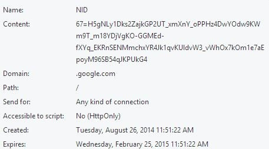

Estructura de las HTTP Cookies
En general, las cookies suelen estas formadas por los siguientes atributos, además de campos identificativos como el nombre de la cookie, el dominio, etc:
Caducidad: A cada cookie se deberá asociar un tiempo de expiración, el cual define el intervalo termporal en el que pueden ser usadas por el cliente. Trás sobrepasar este límite, el tiempo de expiración puede ser renovado. Por lo tanto, se han establecido las siguiente condiciones, las cuales definen cuando una cookie no podrá ser enviada a un servidor:
Al finalizar la sesión por parte del usuario (Cierre del navegador).
Al sobrepasar el tiempo de caducidad.
La fecha de expiración es modificada a una anterior. En este caso, por motivos de seguridad, el servidor puede llevar a cabo la acción de borrado.
Esta se borra por el usuario.
Autenticación: Este campo es de gran uso, pues sirve para identificar de forma unequívoca a cada usuario cuando se ha establecido una conexión o se ha establecido una autenticación mediante usuario y contraseña en el respectivo servidor. Muchas plataformas utilizan este método de autenticación, como puede ser Yahoo!, Wikipedia o Facebook, pues las cookies no son la única forma de autenticación existente. El mecanismo es el siguiente:
El cliente visita la web por primera vez, por lo tanto no tiene almacenada ninguna cookie asociada a dicha página. En ese caso el servidor generará una cookie con información relativa a la petición y datos del cliente.
En las sucesivas visitas, el navegador enviará automáticamente automáticamente la cookie al servidor. La única diferencia es que la fecha y la hora del registro de la visita son modificadas.
Cesta: Este atributo suele ser usado principalmente en plataformas webs de comercio electrónico, donde los usuario tienen la posibilidad de almacenar productos en una lista temporal para futuras compras. Aunque este método método puede ser muy inseguro, ya que existe la posibilidad de que otro usuario altere su contenido. Por ello, es más usual que se genere una cookie de "seguimiento" aleatoria que sea usada como referencia en el servidor.
Una Cookie suele tener este aspecto, aunque en general varía dependiendo de como haya sido creada:
